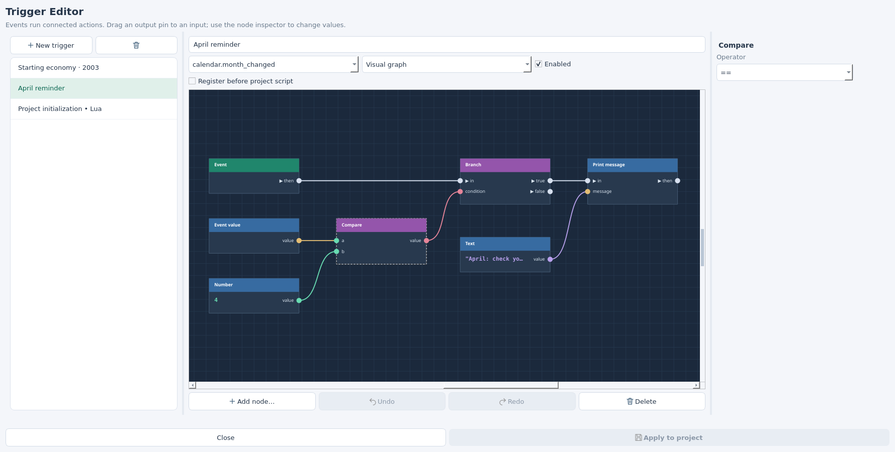
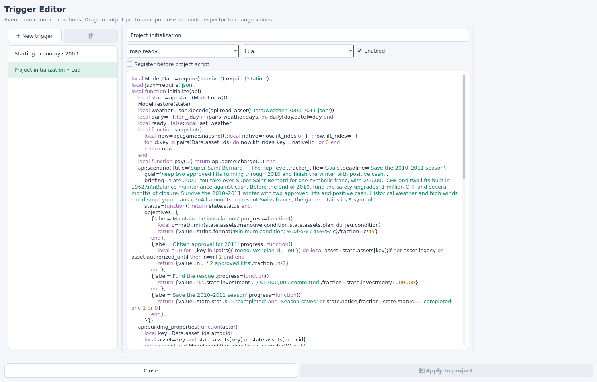

STEP 01
Open a source project
The workshop edits a folder containing custom-map.json, its terrain and its scripts. A map downloaded from Featured is a playable package. For authoring, use the source project rather than its installed package.
Practice: My first season
A small source map with the starting-economy graph, an April reminder and a ready-to-edit scenario. It uses generated terrain and no Super Saint-Bernard data. Extract the ZIP, then open the first-season folder.
skieomod editor first-seasonFor Super Saint-Bernard in a repository checkout, open mod/SkiEO-SuperSaintBernard. Make a separate copy before experimenting. To start from your own terrain, use New or the heightmap tutorial, then Save.
This tutorial uses the workshop build with Configure scenario and Register before project script. If either control is missing, update the tools to a release containing this tutorial, or run this repository's workshop with its Qt dependencies installed. The scenario APIs in the game require Custom Map 1.19.3 or newer.
pipx install --force --index-url https://skieomod.emillon.fr/downloads/pypi/ skieo-custom-map
skieomod updateFor a first installation, run skieomod setup instead of update. Click Triggers in the toolbar. The practice project already contains two visual triggers and Project initialization • Lua.
Checkpoint: the Trigger Editor opens with a trigger list on the left, a graph in the centre and node properties on the right.
STEP 02
Connect an event to an action
A trigger waits for its selected event. When that event occurs, the white execution connections tell it which actions to run. Coloured connections supply the data those actions need. A value connection alone does not execute an action.
Your first graph
- Click New trigger, name it Welcome, leave Enabled checked and choose
map.ready. - Leave the mode at Visual graph. The default graph already connects Event.then → Print message.in and Text.value → Print message.message.
- Select Text. Change its Value in the right-hand inspector to
My first scenario is ready. - Click Apply to project, close the dialog, then Save → Build → Test → Play.
Print message writes to the Custom Map/UE4SS log. It does not open an in-game briefing or notification.
The same trigger in Lua
Select event map.ready and mode Lua. Paste only this body; the editor registers the event callback for you:
api:log('My first scenario is ready.')In Scripts/main.lua, the corresponding registration would be api:on('map.ready', function(event) … end). Do not add that wrapper inside a Lua trigger.
| Connection | Use |
|---|---|
| White · execution | then → in runs the next action. |
| Green · number | A Number supplies an amount, year, rate or delay. |
| Purple · text | A Text supplies a message, currency or weather name. |
| Pink · boolean | A comparison supplies true or false to Branch. |
| Gold · event value | Reads a field from the selected event; the compiler checks its type when an action needs it. |
Add nodes with Add node… or right-click. Drag from an output pin to a compatible input pin. Each input accepts one link. Use the wheel to zoom, middle-drag to move around, and Undo to correct a change. Select a node or link and press Delete to remove it.
STEP 03
Super Saint-Bernard's starting economy
Select Starting economy · 2003. This is a converted part of the actual scenario's map.ready initialization: it configures the session with 250,000 CHF, a 38 CHF ticket and historical reference year 2003.
Recreate the graph on your own map
- Create a trigger with event
map.ready. Delete the default Print message and Text nodes, keeping Event. - Add Configure scenario. Connect Event.then → Configure scenario.in.
- Add a Text constant set to
CHF, and three Number constants set to2003,250000and38. - Connect their
valueoutputs tocurrency,start_year,starting_balanceandticket_price, respectively. - Check Register before project script. This registers the configuration handler first, so it runs before the project's other
map.readyhandlers. It still waits formap.ready.
On a new map, leave the action's Rules module empty. Super Saint-Bernard uses economy: its local Scripts/economy.lua retains the advanced construction costs, loans and lift tracking. The practice map needs none of those rules.
To try an easier start, select the 250000 Number node, change its Value to 300000, then Apply, Save and Build. Keep a single enabled configuration trigger: the game can be configured once per session.
The same Super Saint-Bernard configuration
The real trigger retains this Lua equivalent. Leave its event and registration-order checkbox as shown:
local rules = require('economy')
api.game:configure({
currency = 'CHF', start_year = 2003,
starting_balance = 250000, ticket_price = 38,
costs = rules.costs, class_costs = rules.class_costs,
loans = rules.loans,
track_lift_rides = rules.track_lift_rides
})For the practice map or a new project, remove require('economy') and the last four optional fields. Configure only currency, start year, starting balance and ticket price.
Configure scenario sets starting cash and ticket price only on a new game. A restored save keeps its current cash and ticket price. start_year is used by the script's historical calendar; the native game date and money symbol remain visible. In Super Saint-Bernard, native Year 1 represents the 2003–2004 season.
The graph and Lua sources are retained separately. Switching modes selects which source is compiled; it does not translate later edits. If you change the graph's amount, update the optional Lua equivalent before using that mode.
Checkpoint: your new test starts with the chosen cash and ticket price. Loading an older save does not reset its economy.
STEP 04
Run an action only in April
Select April reminder in the practice map, or create it on your map. This exercise introduces a condition without changing Super Saint-Bernard's rescue payments.
Connect the month test
- Choose event
calendar.month_changed. Add Event value, Number, Compare and Branch. - Select Event value: set Key to
monthand Fallback to0. Set Number to4and Compare's Operator to==. - Connect Event value.value → Compare.a, Number.value → Compare.b, then Compare.value → Branch.condition.
- Connect Event.then → Branch.in and Branch.true → Print message.in. Connect a Text containing
April: check your cash reserve.to Print message.message.
Leave Branch.false unconnected: other months do nothing. April's reminder is written to the log. Calendar event months use January = 1 through December = 12.
The same condition in Lua
Choose event calendar.month_changed and use this body:
if (event.month or 0) == 4 then
api:log('April: check your cash reserve.')
endevent is the selected event's payload. A month-changed event supplies month; a year-changed event supplies the native year counter. Use api.game:snapshot() in Lua when you need the scenario's historical year.


Delay waits a Number of seconds before continuing a white connection. It uses runtime timers; a delay is not a calendar month or year. Use calendar events for seasonal rules. Add funds changes the cash balance; it does not record scenario revenue. A one-time rescue grant also needs saved state so reopening a save or reaching April again cannot pay it twice.
STEP 05
Make it a playable scenario
The practice map already has a briefing and two objectives: reach April 2004 with at least 100,000 CHF left. A negative cash balance fails the scenario immediately. You can place a Ticket Office and a lift, sculpt or import your terrain, then build a resort within that budget.
Keep using visual graphs for events, starting values and simple actions. The objective panel, saved progress and victory/failure evaluator currently use the scenario Lua API. The included starter supplies those parts so you can begin by changing the graphs.
Give the starter your own setting
- Open the practice project. In the workshop's Map panel, set your map's name, author and a unique ID before sharing it.
- Set your starting cash and ticket price in Starting economy · 2003. Keep its year at
2003for this first exercise: the starter's deadline is April 2004. - Use the Objects placement panel to add your initial buildings and lift, or let the player construct them. See the object placement tutorial.
- Select Project initialization • Lua. Its full script contains the title, briefing, deadline, minimum reserve and objective labels. Edit those together if you want a different goal. Changes to the graph's year do not automatically rewrite these rules.
- Apply, Save, Build, Test and Play. The game displays the native briefing and tracks the two objectives.
To add this evaluator to a blank map, download the complete starter script and paste it into Project initialization • Lua. Recreate the starting-economy graph from step 3. For a map with an existing script, merge the starter's registration into the existing initialization function so its other handlers remain in use.
How the starter stores progress
The initialization function receives api. It obtains a JSON-compatible state table and registers a scenario with one to four objectives. Each objective returns display text and a fraction between 0 and 1.
local state = api:state({status = 'active', balance = 250000})
api:scenario({
title = 'My first season',
briefing = 'Reach April 2004 with a cash reserve.',
goal = 'Finish with at least 100,000 CHF.',
deadline = 'April 2004',
status = function() return state.status end,
objectives = {{
label = 'Keep a cash reserve',
progress = function()
return {
value = string.format('%.0f CHF', state.balance),
fraction = math.max(0, math.min(1, state.balance / 100000))
}
end
}}
})This fragment belongs inside the initialization function. The complete downloadable script also registers a map.ready handler and checks api.game:snapshot() every second. It sets state.status to completed or failed when the conditions are met.
api:state(defaults) restores saved values before the script registers its panels. Native manual saves and autosaves retain that table for a declared scenario. Store numbers, strings, booleans and tables, keeping the state under 32 KiB; keep functions and game objects in the script.
The evaluator stops changing a completed or failed result. Real-time polling checks the current game calendar; pausing the game does not advance the April deadline.


STEP 06
Build, then test the rules
Click Apply to project in the Trigger Editor, close it, then Save → Build → Test → Play. Build validates graph types, missing inputs and cycles, then compiles the enabled graphs and Lua triggers into the package's entry script.
skieomod build first-season
skieomod test first-season --check-scripts
skieomod run first-season--check-scripts requires Lua 5.4 / luac; syntax validation does not execute your gameplay rules. Omit this option if the compiler is unavailable. Play is where you check the scenario's behaviour. Editor Play starts its own fresh test instance and reloads that instance after a rebuild.
- Fresh start: verify the briefing, initial cash, ticket price and objective text.
- Calendar: let April arrive and check that the reminder appears in the UE4SS log, with the expected victory or failure result in the game.
- Failure: on a disposable test, create a deficit and check that the scenario fails. For a fast deadline test, use a copied starter script with an earlier deadline.
- Restoration: save after spending some cash, reload and verify that cash and scenario progress resume. Repeat with a completed or failed scenario.
Checkpoint: saving and reopening preserves progress; rebuilding then starting a new test uses your edited source values.
The files behind the graph
custom-map.json Source manifest and build settings
Triggers/triggers.json Graphs, Lua equivalents, events and enabled flags
Scripts/main.lua Project initialization and scenario evaluator
Scripts/economy.lua Advanced rules module (Super Saint-Bernard only)
bin/*.skieomap Built playable packageThe source manifest keeps its original script entry and links the trigger source:
"script": {
"language": "lua", "api": "1.1",
"entry": "Scripts/main.lua", "permissions": ["gameplay"]
},
"build": {
"triggers": {"file": "Triggers/triggers.json"}
}Merge these settings into your existing manifest, preserving terrain, vegetation, resources and scene settings. Local Lua modules need to be declared in content.assets, such as Scripts/economy.lua, along with their module dependencies.
Build creates Scripts/skieomod-generated-authoring.lua inside the package. Edit the source graph or project Lua and rebuild. The generated entry is not the authoring file. Raw pack archives files; use build to compile your graph first.
Super Saint-Bernard's actual trigger JSON ↓ · April reminder trigger JSON ↓ · API and source format reference ↗
The starting-economy JSON references the real economy module. Use it with the Super Saint-Bernard source, or clear Rules module before adapting it to another map. To add the reminder to an existing project, merge its trigger entry into the existing triggers array rather than replacing your other triggers.
When a trigger does not behave as expected
Build asks me to connect an input
Select the named action. Add a constant of the required type and connect its value to the missing input. Values are edited on constant nodes, not in an action's unconnected input. Configure scenario needs all four data connections.
The message is missing from the game screen
Print message writes to the UE4SS log. Use the starter's scenario briefing and objective panel for player-facing instructions.
Configuration says it ran twice, or the wrong year is used
Use one enabled Configure scenario action. Remove the older api.game:configure call if you moved it from project Lua into the graph. Check Register before project script so the first snapshot and resort initialization see the chosen historical year.
My graph changed but Lua still has the old value
Switching mode retains both sources without synchronizing them. Only the selected mode runs. Update the Lua equivalent explicitly if you want to use it.
Saving did not change my test's starting cash
Apply the trigger changes, Save, Build, then start a fresh test. A saved game retains the cash and ticket price it had when saved. This prevents loading a save from granting the starting capital again.
A calendar trigger repeats after reloading or in another year
Events are not one-time payment records. Store a paid flag in api:state and check it before awarding a grant. Super Saint-Bernard's Lua grant evaluator checks the year, committed investment and saved grant amount. Keep that evaluator when editing its economy graph.